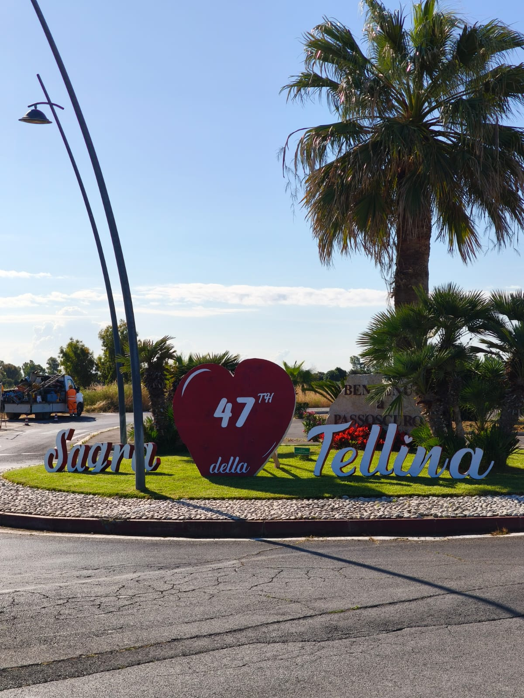

Due luoghi, due anime di Roma
Esplora culture, storie e paesaggi diversi ma complementari

Torre Angela
Scopri la vivace periferia est di Roma, dove storia antica e vita moderna si intrecciano in un mosaico culturale unico.
Esplora

Passoscuro
Immergiti nella tranquillità della costa romana, dove il mare incontra la storia in un'atmosfera rilassante e autentica.
EsploraUn viaggio di contrasti
Confronta le due realtà e scopri come questi luoghi raccontano storie diverse ma ugualmente affascinanti del territorio romano.
Confronta